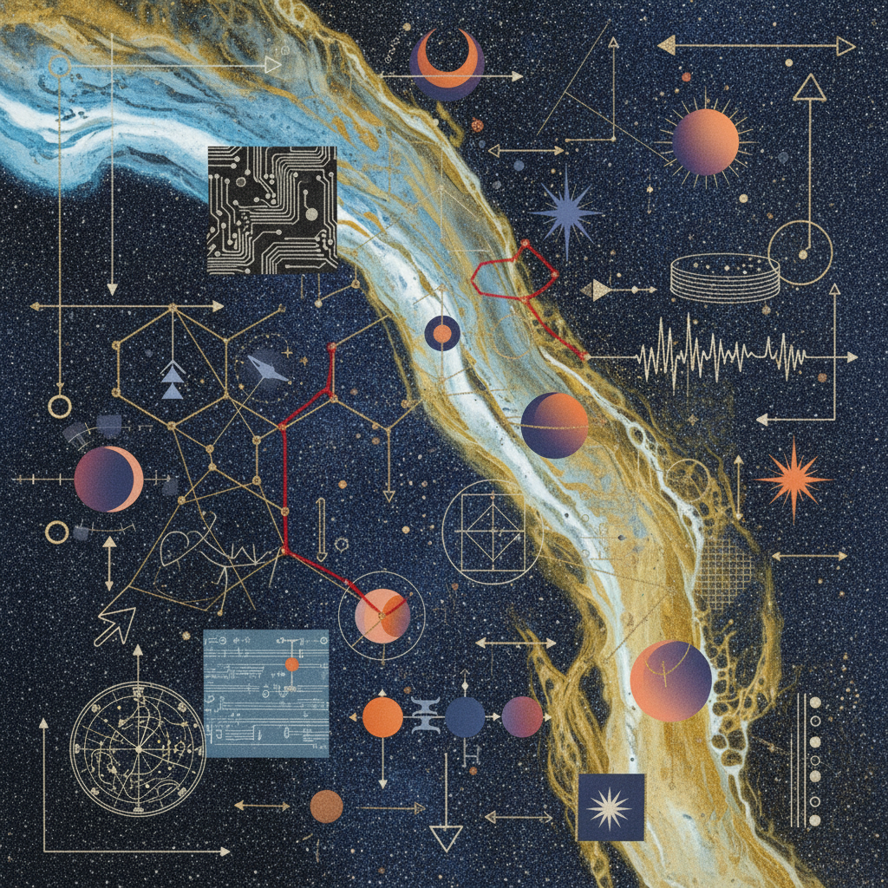

Water to Air Transition
The process of sublimation. Turning heavy emotional density into the clear, objective atmosphere of intellectual equilibrium.
DOCUMENT_8: ENERGY_MAPPING

Visual Catalyst: Sublimation Phase
The Practice Table
Operational FrameworkEmotional Flooding
Let the weight of the collective sorrow drain through the somatic floor.
Observe the wave as a data point in a larger rhythmic cycle.
Measured Empathy
Dissolution
Shed the identifying mask of the 'caregiver' or 'sufferer'.
Define the architecture of the space between self and other.
Clear Boundaries
Boundlessness
Surrender the need to fix or anchor the drifting spirit.
Translate the infinite into a structured sequence of breath.
Poetic Structure
Mini Research Prompt
"Identify one aqueous habit that currently hinders your intellectual ascent. How does it manifest in your dialogue with the 'Other'?"